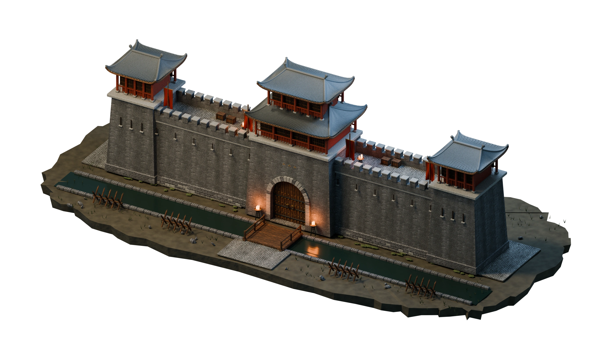
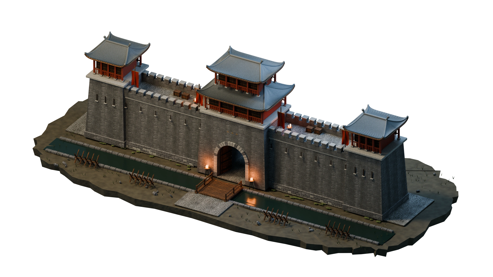
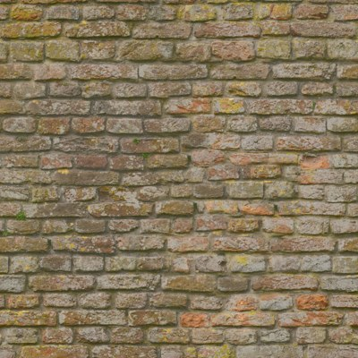
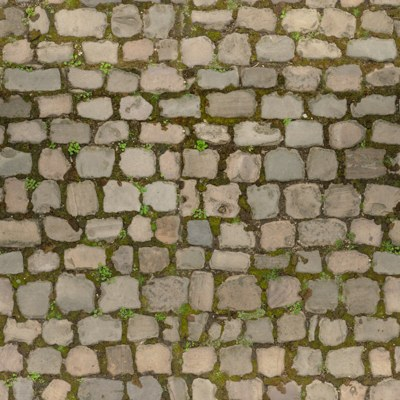
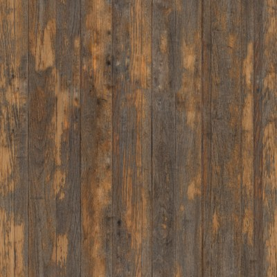

ESTABLISHING EMBER GATE


Keep the fire. Hold the wall.
This first build establishes the fortress wall for the zombie-defense game. Explore its structure and inspect the details before the first wave arrives.
On touchscreens, drag with one finger and pinch to zoom. Select a wall section from the bottom bar to focus it.
An original 3D environment rendered into a 2.5D isometric scene, with sourced CC0 material textures, modeled ceramic roof tiles, and physically rendered lighting. The wall is the focus of this build; zombie waves and the upgrade economy are not implemented yet. Displayed dimensions are fictional design specifications.
Full source credits ↗Please reload the page to retrieve the environment artwork.
A fictional stronghold in China, around 1400. Nanjing’s early Ming fortifications guide the masonry and gate design; the layout and pavilion are a game interpretation.

Weathered brick ↗Poly Haven · Rob Tuytel · CC0
Stone paving ↗Poly Haven · Rob Tuytel · CC0
Aged timber ↗Poly Haven · Rob Tuytel · CC0The wall, gatehouse, curved tile roofs, bridge, and props are original modeled geometry. The material photographs above are the actual CC0 texture maps, color-adjusted in the scene. Historic reference photographs are linked, not republished.
Read the full credits & production notes ↗